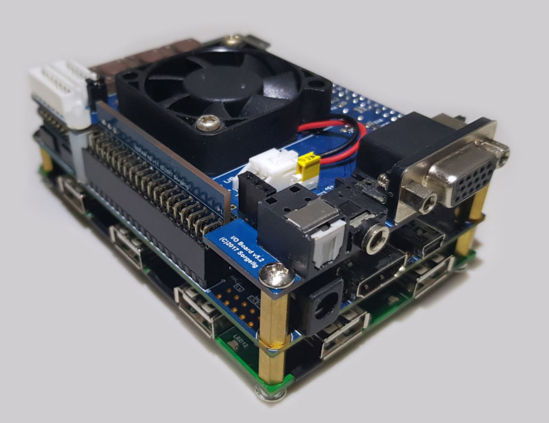

Introduction¶
MiSTer is a port of the well-known MiST project to a larger field-programmable gate array (FPGA) and faster ARM processor. MiSTer provides modern video output through HDMI (VGA and analog audio are still available via an optional daughter board). It’s based on the Terasic DE10-nano board. Here are some improvements over the MiST board:

The Hardware¶
FPGA Device¶
- Intel Cyclone® V SE 5CSEBA6U23I7NDK device (110K LEs)
- Serial configuration device – EPCS64 (revision B2 or later)
- USB-Blaster II onboard for programming; JTAG Mode
- HDMI TX, compatible with DVI 1.0 and HDCP v1.4
- 2 push-buttons
- 4 slide switches
- 8 green user LEDs
- Three 50MHz clock sources from the clock generator
- Two 40-pin expansion headers
- One Arduino expansion header (Uno R3 compatibility), can be connected with Arduino shields
- One 10-pin Analog input expansion header (shared with Arduino Analog input)
- A/D converter, 4-pin SPI interface with FPGA
Info
Board is mass-produced by a large manufacturer and freely available for a relatively cheap price.
HPS (Hard Processor System)¶
- 800MHz Dual-core ARM Cortex-A9 processor
- 1GB DDR3 SDRAM (32-bit data bus)
- 1 Gigabit Ethernet PHY with RJ45 connector
- USB OTG Port, USB Micro-AB connector
- Micro SD card socket
- Accelerometer (I2C interface + interrupt)
- UART to USB, USB Mini-B connector
- Warm reset button and cold reset button
- One user button and one user LED
- LTC 2x7 expansion header
Due to a larger FPGA, bigger systems can be created. It’s also possible to add more support from the ARM side. For example, TZX tape format can be parsed on ARM and then sent to FPGA. Firmware is not limited by code size or available RAM. It’s even possible to emulate some parts of system through ARM that are not available in the FPGA (resulting in a so-called hybrid emulator).
Tip
MiSTer scales original video resolution to a standard HDMI resolution (usually 1280x720p60), so you don’t need to look for some ancient monitor with VGA input supporting non-standard resolution and frame rates. For purists, VGA is still available, and it outputs original video resolution.
How does it work?¶
MiSTer adds several daughter boards to the original DE10-nano board. You don’t need to install all boards. MiSTer starts from entry level as a bare DE10-nano board. With just one additional board (SDRAM), you will be able to use almost all cores.
SDRAM board: (recommended expansion)¶
This small board plugs into the GPIO0 connector of the DE10-nano board. Whilst the DE10-nano has fast DDR3 memory, it cannot be used to emulate a retro EDO DRAM due to a high latency and shared usage from the ARM side. This SDR SDRAM on a daughter board is required for most cores to emulate a retro memory module.
I/O board: (optional expansion)¶
This board plugs into the GPIO1 connector of the DE10-nano board. It provides a legacy VGA output (6 bits per component), analog audio (3.5mm phone jack), digital optical audio, buttons, and LEDs. This board is useful if you prefer VGA over HDMI or you want to put the MiSTer inside a case. This board also helps for core development; HDMI scaler code requires around twice as much time to compile, while compiling for VGA-only will speed up development. This board is not required to run most cores.
RTC board: (optional expansion)¶
This board is plugged into the LTC connector and provides a real-time clock (RTC). You still can have a real-time clock without the board if MiSTer is connected to Internet via Ethernet. Only two cores use this feature, so it is only for enthusiasts.
USB hub board (optional expansion)¶
This board adds a 7-port USB hub that sits under the main board.
Schematics and Gerber files are available to download. Boards are considered DIY (do it yourself). There are no restrictions on how these boards are manufactured and sold, or by whom; any third party is welcome to manufacture and sell them.
What is an FPGA anyways?¶
FPGA stands for field-programmable gate array, essentially, an FPGA is a hardware circuit that a user can program to carry out one or more logical operations. Taken a step further, FPGAs are integrated circuits (ICs), which are sets of circuits on a chip (that’s the “array” part). Those circuits, or arrays, are groups of programmable logic gates, memory, or other elements.
With a standard chip, such as the CPU/GPU in your laptop, Arduino or Raspberry Pi the chip is fully baked. It can’t be programmed; you get what you get. With these chips, a user can write software that loads onto a chip and executes functions. That software can later be replaced or deleted, but the hardware chip remains unchanged.
With an FPGA, there is no chip. The user programs the hardware circuit or circuits. The programming can be a single, simple logic gate (an AND or OR function), or it can involve one or more complex functions, including functions that, together, act as a comprehensive multi-core processor.
Why Use an FPGA?¶
A typical potential user will eventually ask:
“Why do you need to use FPGA while other proven solutions exist, such as Raspberry Pi?”
There are debates about how to refer to the process of simulating real hardware using FPGA. Some people insist it’s not emulation but rather true hardware replication, while any simulation using a traditional CPU should be referred to as emulation.
I have my own opinion here. :) From my point of view, if the FPGA code is based on the circuitry of real hardware (along with the usual tweaks for FPGA compatibility), then it should be called replication. Anything else is emulation, since it uses different kinds of approximation to meet the same objectives. Currently, it’s hard to find a core that can truly be called a replica – most cores are based on more-or-less functional recreations rather than true circuit recreation. The most widely used CPU cores – the Z80 (T80) and MC68000 (TG68K) – are pure functional emulations, not replications. So it’s okay to call FPGA cores emulators, unless they are proven to be replicas.
To go back to the original question, then, why FPGA, if it’s also just emulation? Well, FPGA emulation is fundamentally different than emulation on a CPU. Traditional emulators on CPUs execute code sequentially. This is a tricky method of emulation because real hardware has many chips and all of them work in parallel. The CPU, video chip/logic, audio chip, memory arbiter – all of them are working at the same time. So a traditional emulator has to take care of all these parts and try to emulate the whole orchestra at the same time by quickly “running” from one chip to another. This requires a lot of CPU power to emulate even an old and slow retro computer. Sometimes even a modern CPU working at 100 times the speed of the retro computer is not enough, so the emulator has to use approximation, skip emulation of some less important parts, or assume some standard work of the emulated system without extraordinary usage. Let’s take a well-known emulator, UAE, emulating an Amiga. On a Raspberry Pi 3, you can run some Amiga CPU benchmarks and get crazy numbers like 100 times the original 68000 processor. So you may assume you have an emulated Amiga that is 100 times faster than real one. No, you don’t. If you run different kinds of demos or games, you will see the video stutters sometimes. For example, if you play the well-known “State of The Art” demo by Spaceballs, you will notice video stuttering at some points, while a real Amiga 600 with 1x CPU speed plays the whole demo very smoothly. This is how traditional emulators on Raspberry Pi work.
FPGA emulation works very differently from traditional emulation on CPU. An FPGA is a large array of simple triggers and other logic – just like any other chip/CPU. The only difference is that specific chips/CPUs have these triggers and logic permanently connected, while FPGA allows you to connect them however you want. A special HDL (hardware description language) describes how to connect all these triggers/logic cells. Everything in FPGA works in parallel like in the original chips/devices. Thus, FPGA is pretty close to the original hardware. FPGA doesn’t need high frequencies to emulate retro computers; it works at much lower frequencies than traditional emulators require. Since everything in FPGA works in parallel, it is no problem to handle any possible usage of the emulated system. Developers using FPGA usually concentrate on the specific part to make it work correctly – and it will work as it should in any possible scenario. In the same reference demo, “State Of the Art,” using FPGA emulation, you can see smooth video through the whole playback, as on the original hardware.
You may want to ask, “So why not make all emulators on FPGA then?” The answer: FPGA programming is not so trivial. Every bit in FPGA works in parallel, so the developer needs to think in parallel as well :). What is trivial on CPU is not trivial on FPGA – although some parts that are trivial on FPGA cost a lot in CPU code.
Linux?¶
DE10 uses Linux for house-keeping duties such as loading data from the SD card. It may seem as if Linux will take considerable time to boot, but this isn’t the case. The version used by MiSTer has been optimized to only take a couple of seconds to boot. Most monitors and TV require a longer time to lock on the video signal and start to display, so the result is that the MiSTer has an “instant-on” feel, like original hardware back in the day.